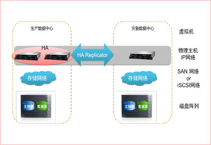

I. 小型医院容灾解决方案
- 
- 小型医院由于的业务规模较小，数据量也不是很大，往往没有虚拟化环境。推荐用联想的Sure HA搭建备容灾系统。数据复制基于IP网络，存储可以使用基于iSCSI协议的存储，也降低了存储的成本。
- 数据复制
- 通过专线将主备数据中心IP网络互联
- 通过Sure HA的容灾功能实现主备数据中心的数据复制
- 远程保护
- 基于远程镜像的异地应用容灾，不仅能够异地镜像业务数据，还可以对软硬件资源进行监视。
- 独创的混合型集群可以实现同步/异步镜像，当主节点发生故障时，能够在镜像节点恢复业务。
II. 中型医院容灾解决方案
- 中等规模的医院由于业务规模和数据量都比较大，对存储容灾需求会适当提高。推荐采用联想的基于存储的数据复制实现容灾。
- 数据复制
- 通过专线将主备数据中心SAN网络互联。
- 通过MirrorView实现主备VNX5200的数据复制。
- 虚拟机保护
- 使用HA功能实现虚拟机在主备数据中心的保护。
- 使用vMotion功能实现虚拟机在主备数据中心的切换。
- 使用SRM来保证业务连续性。
双活数据中心
- 医疗服务现代化的发展，医疗信息系统要求提供7*24小时的高可用性服务，业务运行不允许中断，系统一旦停机会给患者及医院造成严重影响。
- 传统主备数据中心以数据复制技术为基础，以灾难情况下的站点整体切换为目标，强调灾难情况下的站点恢复能力，但由于底层数据复制配置、网络环境、相互依存服务等限制，无法顺利实现单个应用系统或主机的透明切换和迁移；
- 容灾数据中心的设备资源长期处于闲置状态，同时造成大量电力消耗，所以大部分医院并没有建立一个高效的容灾机制，一旦应用系统或机房硬件出现故障，将会造成业务中断，影响医院运营。
-
III. 大型医院双活方案
- 数据复制
- 通过专线将主备数据中心SAN网络互联
- 通过VPLEX Metro实现两个数据中心的数据同步
- 虚拟机保护
- 使用HA功能实现虚拟机在两个数据中心的保护
- 使用vMotion功能实现虚拟机在两个数据中心的切换
- 使用DRS功能实现虚拟机在两个数据中心动态分配
医院备份需求分析
医院信息系统中存储的患者诊疗数据和医院应收管理数据，无论是现在还是将来，数据和应用安全和可靠对于它来说都是第一重要的。引起数据丢失的原因很多，备份系统解决的问题主要在：
- 系统硬件故障
如数据/系统磁盘的损坏将导致数据不能访问，并可能导致应用进程终止或系统停止，甚至系统不能启动；网卡的损坏可使终端用户无法访问系统服务；CPU或内存的时效则会导致系统的死机。
- 应用程序或操作系统出错
由于操作系统或应用程序可能存在不完善的地方，当碰到某种突发事件时，应用系统崩溃（只能通过改善系统来解决）
- 人为错误
- 一些人工的误操作，如删除系统或应用软文件，终止系统或应用服务进程，也会导致系无法访问；
- 电脑黑客/病毒入侵
- 由于目前的大多数计算机系统连均载网络锁，若缺少有效防范机制，很容易遭受病毒的感染或黑客的入侵，轻者数据被损坏，重者系统瘫痪（只能通过加强管理杜绝）
- 自然灾害
由于一些意外的不可抗拒的因素，如火灾，洪灾，地震，雷击等导致计算机系统被破坏。系统的恢复非常困难和秏时，导致业务系统长时间的中端（通过容灾系统来解决）。
- 正常停机等
主要指计划内的系统升级、安装软件、系统备份等过程
为避免以上问题造成的数据丢失，建议对数字医院信息系统的核心应用系统进行定期备份，并定期进行数据恢复验证测试，确保备份数据的可恢复性。
医院在信息增长和服务级别不断提高的情况下，对数据的保护提出了更高的要求：
- 通过更快、更一致的备份和恢复消除风险
- 通过保护至关重要的资产和减少流程错误提高安全性和可靠性
- 利用基于策略的备份任务和集中化管理减少复杂性
- 使用较新的备份更快速地恢复应用程序
- 从数据库损坏中更快地恢复
- 利用目前重复数据删除技术减少备份空间和备份介质的增长
医院需要备份的核心数据有HIS数据库，根据医院的规模不同数据量在几十GB到几百GB数量级。其他的数据库类型的应用如LIS，RIS，CIS等数据量通常会小于HIS。
医院各系统中数据存储对容量需求最大的是PACS系统，从几TB到几十TB不等。
面对以上种种需求，联想推荐采用联想备份一体机解决方案，实现关键应用系统的在线备份；采用基于磁盘介质的备份设备，可以实现 数据的快速恢复，并保证数据可恢复。同时备份一体机还支持传统的磁带备份设备，可以实现重要数据的离线保存。
联想备份一体机解决方案使您能够快速而可靠地备份与恢复，以满足当今关键的恢复时间要求。利用磁盘备份解决方案，可以从总体上改进对医院各业务系统的关键数据的保护。
联想备份一体机可帮助医院显著提高备份效率和可靠性、降低成本，并最大限度地减少管理工作。
附：联想备份一体机介绍
联想备份一体机是一个“黑盒子”，在这个“黑盒子”中包含：
- 备份管理服务器
- 备份存储设备
- 备份软件
- 维护服务
即包含一个标准的专业备份系统必需的所有内容。
使用“黑盒子”的目的是使备份系统实施快速化、维护简易化。
此备份一体机的采购和部署就像购买PC机一样简单，用户购买该设备后不需要额外再为备份系统投资，也不需改变现有业务系统的架构，就可以快速实现备份系统的部署。使客户摆脱和众多软硬件厂商及服务提供商马拉松式的谈判，以一站式的形式一次完成用户备份环境的搭建，极大简化备份系统的建设规划时间，缩短部署周期，降低规划、建设、运维成本，节省了总体投资，大大提高备份系统建设效率。